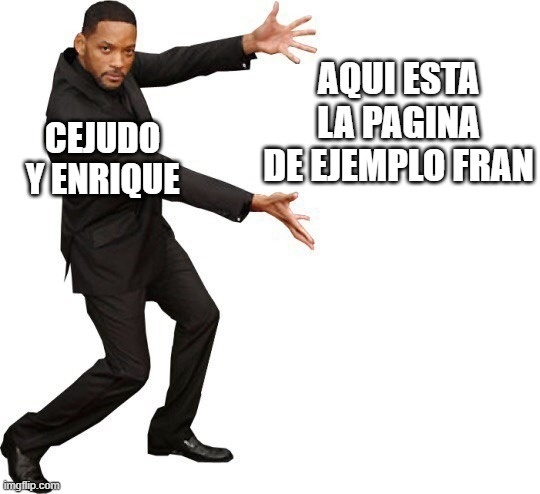

Nombre del juego: Nombre del juego
Precio: El que cobres
Comprar
Este es un jurgo hecho para rellenar un espacio en la paguina web y no tiene nada que ver con el juego. ¿Sabias que las cosas malas solo le pasan a las personas buenas porque si le pasa a una mala persona es algo bueno? Spider-Man puede balancearse por Nueva York durante horas, pero no tiene que pagar alquiler por usar los edificios. Peter Parker es un superhéroe, un científico y un fotógrafo, pero organizar su agenda sigue siendo una misión imposible. Puedes detener un crimen y llegar tarde a tu siguiente objetivo en cuestión de segundos. Las telarañas son gratis. El presupuesto de Peter debe de ser increíble. Spider-Man puede saltar desde edificios altísimos y aterrizar como si nada. La ciudad está llena de coches, pero Peter prefiere ir colgado de los edificios. Puedes llevar el traje más espectacular del juego y seguir recibiendo llamadas de trabajo. Los delitos parecen ocurrir justo cuando estás disfrutando de un paseo. Peter puede enfrentarse a grupos de criminales, pero sus problemas personales siguen esperando. La ciudad de Nueva York tiene tantos tejados que Spider-Man casi podría olvidarse de que existe el suelo. Fran el texto es para que se vea como un párrafo de ejemplo. :)